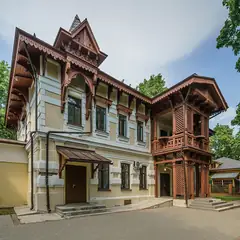
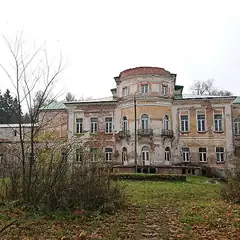

Районы · Новая Москва
Куда сходить в Новой Москве
16 мест в Новой Москве: 4 культурных места, 3 компьютерных клуба, 2 кофейни и 2 музея. Например, «Дом-музей Пастернака», «Усадьба Александрово-Щапово» и «Усадьба Михайловское». 9 готовых планов начинаются здесь. Больше всего мест у станций «Потапово», «Кедровая» и «Новопеределкино».
- 16 мест
- 9 планов
- 3 клуба
Места 13
ул. Павленко, 3
Дача Пастернака в писательском посёлке Переделкино.
Подробнее и маршрут: Дом-музей ПастернакаПозвать сюда: Дом-музей Пастернака
Фото: Артём Белевич, CC BY-SA 4.0 · Wikimedia Commons

пос. Щапово, Новая Москва
Деревянный усадебный дом-музей и парк в Новой Москве.
Подробнее и маршрут: Усадьба Александрово-ЩаповоПозвать сюда: Усадьба Александрово-Щапово
Фото: A.Savin, Free Art License · Wikimedia Commons

пос. Михайловское, Новая Москва
Усадьба Шереметевых над рекой Пахрой: дворец и старый парк.
Подробнее и маршрут: Усадьба МихайловскоеПозвать сюда: Усадьба Михайловское
Фото: ЛЮБИТЕль, CC BY-SA 4.0 · Wikimedia Commons
пос. Остафьево, Новая Москва
Усадьба Вяземских в Новой Москве: дворец, где бывал Пушкин, парк и пруд.
Подробнее и маршрут: Усадьба ОстафьевоПозвать сюда: Усадьба Остафьево
Фото: Дмитрий Рогачёв, CC BY-SA 3.0 · Wikimedia Commons
ул. Погодина, 4 (территория Дома творчества Переделкино)
Новое
Ресторан с книжными полками, камином и большой верандой среди сосен в Доме творчества: русская кухня и завтраки. В выходные бронируйте заранее, до 23:00.
д. Николо-Хованское, 230
Новое
Бани-бочки в Новой Москве: «Прованс» на 2–4 гостей — 8 000 ₽ за 2 часа, «Хуторянка» до 8 человек, горячий чан с травами на дровах и гриль-домик.
Подробнее и маршрут: Деревенские баниПозвать сюда: Деревенские бани
Внуково, квартал № 30, 1, стр. 1
Новое
Светлый боулинг на четыре дорожки с удобной зоной для игроков и ресторан с живой музыкой во Внукове: поиграть вдвоём или компанией, потом поужинать. 11–23.
ул. Погодина, 4, корп. 2 (Городок писателей Переделкино)
Новое
Писательский Дом творчества среди сосен: выставки, экскурсии по городку писателей, книжный клуб по субботам в 16:00, спектакли в кабинете редкостей. Вт–вс 10–20.
Подробнее и маршрут: Дом творчества ПеределкиноПозвать сюда: Дом творчества Переделкино
Троицк, зона отдыха «Заречье»
Новое
Лес и широкие дорожки вдоль Десны в Троицке: тихие прогулки и велосипед, корты, летом бассейны с шезлонгами. Хорошо выбраться из города вдвоём. 8–23.
Подробнее и маршрут: Зона отдыха «Заречье»Позвать сюда: Зона отдыха «Заречье»
Скандинавский бул., 3, корп. 2 (Коммунарка)
Новое
Гастропаб в Коммунарке: фирменное пиво, рулька, рёбра и пицца на тонком тесте, по вечерам живая музыка и джаз, летом веранда. Ежедневно 12–00.
Подробнее и маршрут: Таверна РобинаПозвать сюда: Таверна Робина
ул. Эдварда Грига, 17 (ЖК «Скандинавия», Коммунарка)
Новое
Кофейня уровня центра в ЖК «Скандинавия»: фильтр и авторские напитки, выпечка на витрине и хороший плейлист. Пн–пт 8–21, сб–вс 9–21.
Троицк, Городская ул., 20
Новое
Уютная кофейня в Троицке: много десертов, завтраки с омлетом и блинчиками, летом веранда, на полках — подарки и сувениры. Пн–пт 8–21, сб–вс 10–21.
Подробнее и маршрут: Sweet Belka CoffeeПозвать сюда: Sweet Belka Coffee
пос. ДСК «Мичуринец», ул. Лермонтова, 11
На бывшей автобазе Союза писателей в Переделкине: спектакли из советской «полуторки», книги, лекции и винтажный рынок по выходным.

Готовые планы 9
- Дом-музей Пастернака · Музей · м. Боровское шоссе
- 10 минут пешкомДом творчества Переделкино · Литературный центр
- 1 минута пешкомБиблиотека · Ресторан
Дача Пастернака, прогулка среди сосен писательского городка и обед в «Библиотеке» с камином и книжными полками — почти загородный день, не уезжая из Москвы.
Открыть план: День в ПеределкинеПозвать сюда: День в Переделкине
Фото: Артём Белевич, CC BY-SA 4.0 · Wikimedia Commons
- Дом-музей Пастернака · Музей · м. Боровское шоссе
- 11 минут пешкомГаражи · Культурное пространство
Сначала дача Пастернака в писательском посёлке, а минутах в десяти пешком — «Гаражи» на бывшей автобазе Союза писателей: книги, лекции, спектакли из советской «полуторки», по выходным винтажный рынок.
Открыть план: Осень в ПеределкинеПозвать сюда: Осень в Переделкине
Фото: Артём Белевич, CC BY-SA 4.0 · Wikimedia Commons
- Grannar · Кофейня · м. Потапово
- 25 минут пешкомТаверна Робина · Гастропаб
Фильтр и выпечка в Grannar в «Скандинавии», а потом «Таверна Робина» на Скандинавском бульваре: фирменное пиво, рёбра и живая музыка по вечерам.
Открыть план: Коммунарка: кофе и тавернаПозвать сюда: Коммунарка: кофе и таверна
- Усадьба Остафьево · Усадьба · м. Бунинская аллея
Усадьба Вяземских, где бывал Пушкин: дворец, парк и пруд в Новой Москве.
Открыть план: Пушкинская усадьбаПозвать сюда: Пушкинская усадьба
Фото: Дмитрий Рогачёв, CC BY-SA 3.0 · Wikimedia Commons
- Зона отдыха «Заречье» · Парк у реки · м. Потапово
- 18 минут пешкомSweet Belka Coffee · Кофейня
Широкие лесные дорожки вдоль Десны в «Заречье» — собаке есть где побегать, — а в конце кофе и десерт навынос из Sweet Belka в центре Троицка.
Открыть план: Троицк: лес у Десны с собакойПозвать сюда: Троицк: лес у Десны с собакой
- Усадьба Александрово-Щапово · Музей-усадьба · м. Кедровая
Деревянный усадебный дом-музей и парк в Щапове.
Открыть план: Усадьба в Новой МосквеПозвать сюда: Усадьба в Новой Москве
Фото: A.Savin, Free Art License · Wikimedia Commons
- Усадьба Михайловское · Усадьба · м. Кедровая
Усадьба Шереметевых с дворцом и старым парком над рекой.
Открыть план: Усадьба над ПахройПозвать сюда: Усадьба над Пахрой
Фото: ЛЮБИТЕль, CC BY-SA 4.0 · Wikimedia Commons
- Деревенские бани · Баня на дровах · м. Прокшино
Деревенские бани в Николо-Хованском: «Хуторянка» до 8 человек, горячий чан с травами на дровах и гриль-домик — загородный вечер без дачи.
Открыть план: Баня-бочка и чан в Новой МосквеПозвать сюда: Баня-бочка и чан в Новой Москве
- Джой Хаус · Боулинг и ресторан · м. Пыхтино
Светлый боулинг на четыре дорожки с удобной зоной для игроков во Внукове, а поужинать можно в ресторане там же — по вечерам в нём играет живая музыка.
Открыть план: Внуково: боулинг и ужинПозвать сюда: Внуково: боулинг и ужин
Компьютерные клубы 3
просп. Куприна, 24, корп. 1 (Сосенское)
Новый клуб в ЖК «Бунинские луга»: игровые ПК, VIP-буткемпы, PlayStation 5 и горячая еда.
Подробнее и маршрут: Colizeum Бунинские ЛугаПозвать сюда: Colizeum Бунинские Луга
Скандинавский бул., 1, корп. 1 (Коммунарка)
Клуб в Коммунарке: общий зал на RTX 2060 и буткемп на RTX 3060.
Подробнее и маршрут: Colizeum КоммунаркаПозвать сюда: Colizeum Коммунарка
ул. Корнея Чуковского, 2 (ТЦ «Сказка», 3 этаж)
Клуб у «Рассказовки»: мощные ПК, буткемпы и консоли.
Подробнее и маршрут: Colizeum РассказовкаПозвать сюда: Colizeum Рассказовка
Как позвать
- Выбери план, место или событие — в карточке адрес, цены и маршрут в Яндекс Картах.
- Нажми «Позвать сюда» — соберётся приглашение-игра для свидания или голосование для компании.
- Отправь ссылку в любой мессенджер: тебе ответят, а компания отметит, куда и когда может. Бесплатно и без регистрации.